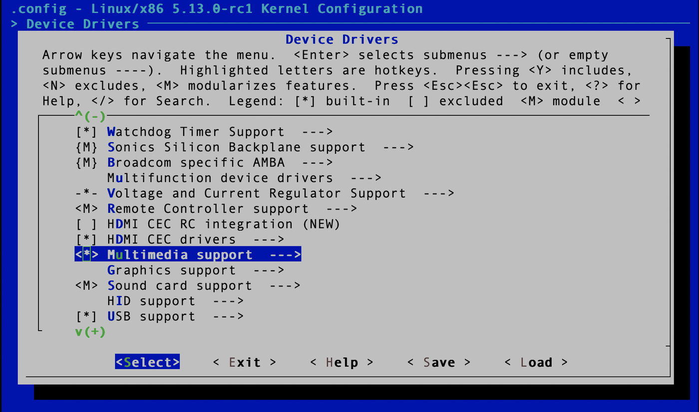
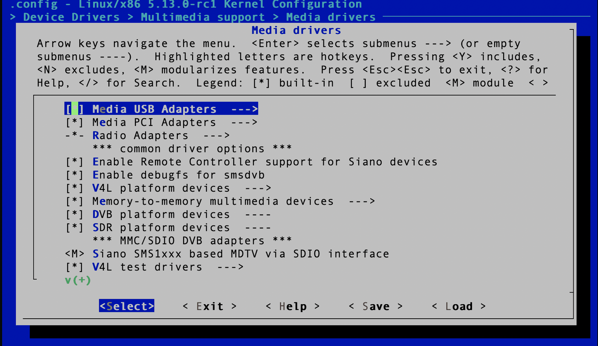
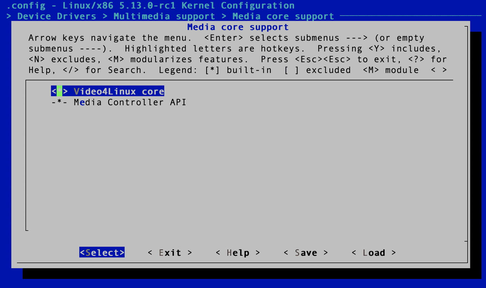
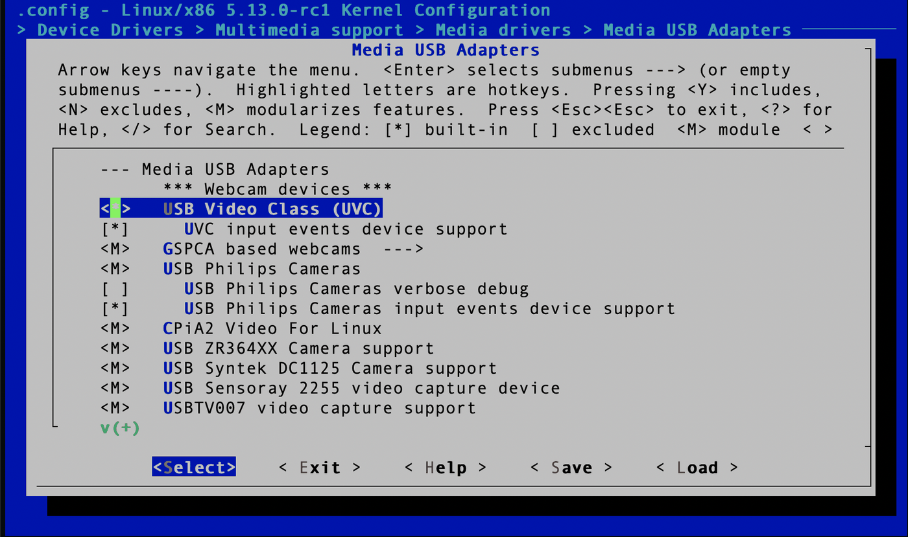

Capturing images from a USB camera in C on Linux
This walks through capturing video from a USB camera in C on Linux, with no framework in the way — just Video4Linux and a small header.
Setting up the kernel
Video4Linux has to be in your kernel. On a distribution like Ubuntu or Fedora it almost certainly already is, but check first. Plug the camera in and run:
ls -ltrh /dev/video*"No such file or directory" means either V4L is missing from your kernel or the camera is not plugged in. Hopefully the second. If the device showed up, skip ahead.
Otherwise you need to reconfigure the kernel. Find your kernel source and run:
make menuconfigFirst, multimedia support — under Device Drivers, scroll to Multimedia support and press y.

Then Media USB adapters, under Device Drivers → Multimedia support → Media drivers.

Next, Video4Linux core itself, under Device Drivers → Multimedia support → Media core support. This is the interface the code will talk to.

Finally USB Video Class, which adds support for USB devices that stream video.

Save, rebuild the kernel, and boot into it.
Getting an image
Grabbing frames needs a single header:
git clone https://github.com/friedrich12/cam.gitPut the header somewhere your code can reach. It is a small class-like object written in C that wraps the ioctl dance:
#include <cam.h>
ImageGetter g; /* the capture object */
initialize_imget(g, "/dev/video0"); /* camera device */
set_img_format(&g); /* image format */
setup_buffers(&g); /* set up buffers */
grab_frame(&g); /* grab a frame */
char *imgdata = g.buffer; /* image data */
size_t imgsize = g.bufferinfo.bytesused; /* size of the buffer */
The image format is hardcoded in set_img_format; change it there if you
need something else.
To list the camera devices on the system:
ls -ltrh /dev/video*
Working out which one is your USB camera takes some trial and error. If the machine
has a built-in camera, the USB one is usually /dev/video1.